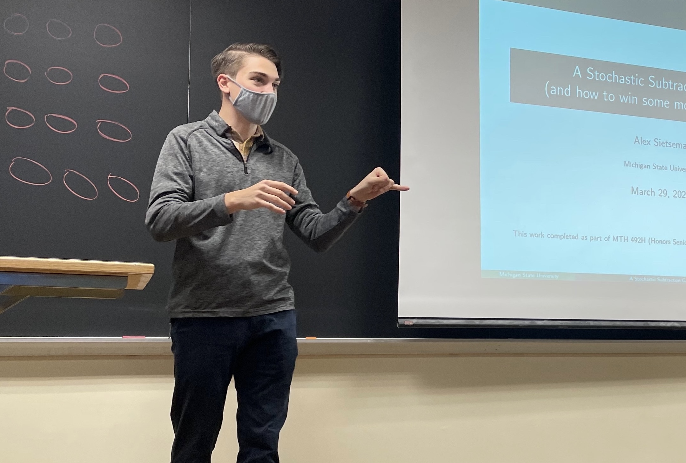
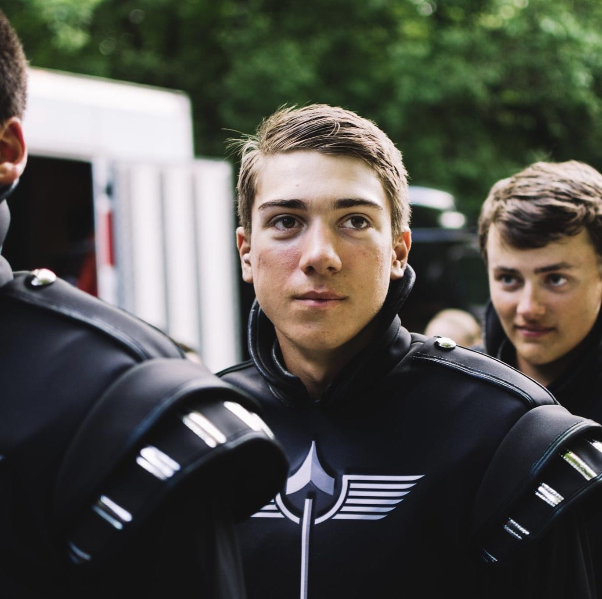
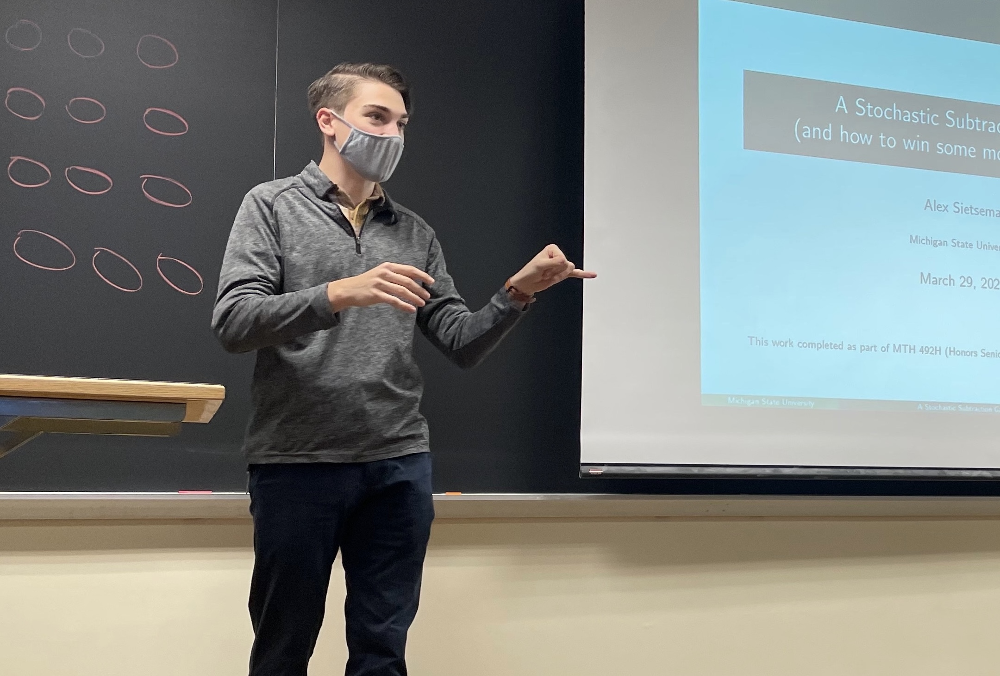
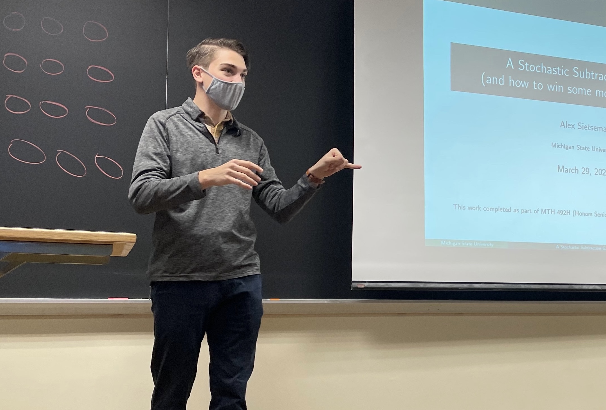
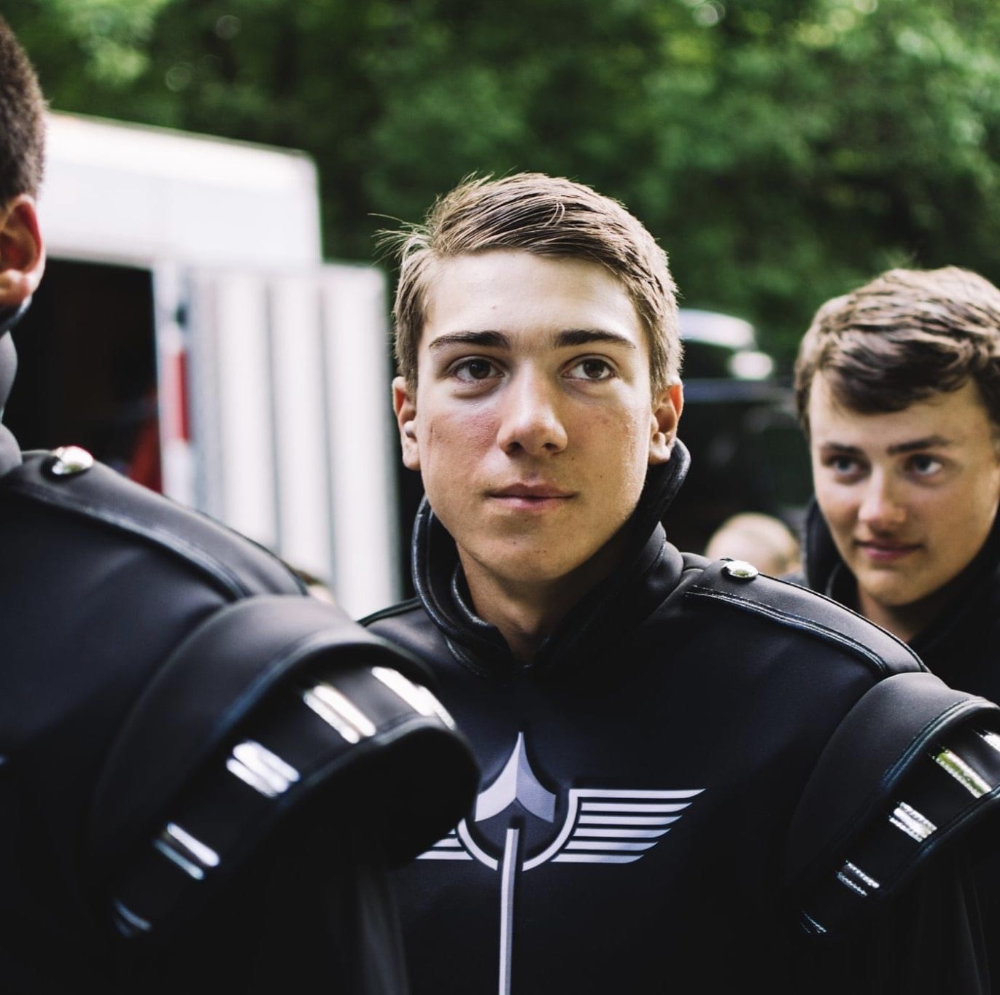
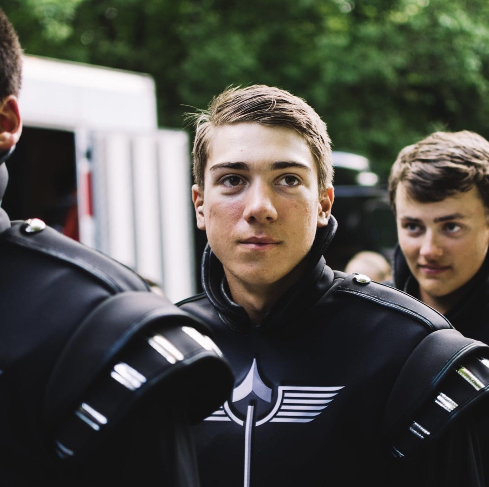

Outside of mathematics, I play a lot of escape rooms, Ultimate (frisbee), ball hockey, and Euchre. I also enjoy cooking, mixing drinks, watching TV and movies, and watching/complaining about college football-- Go Blue!
test
Below are a few pictures and other points of interest.


Escape Rooms
I play and review escape rooms with my friend Braden Hanks-- we've played over 120 in Michigan, Indiana, Illinois, Ohio, Pennsylvania, and West Virginia. Check out our tier list below!
Drum Corps
In 2019, I marched in the Phantom Regiment Drum and Bugle Corps as a euphonium player and small ensemblist. Check out my headcam run below!

 

 
